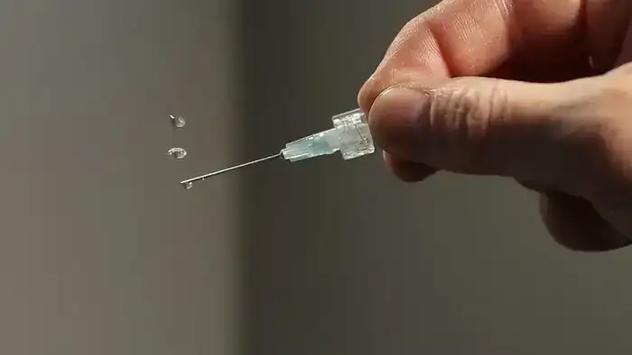

The physics
Acoustic levitation is a real technique: a standing wave of ultrasound creates pressure nodes where small objects can be trapped and held. It is used in laboratories to handle droplets and small particles without contact.
Maps, diagrams and images


The claim
The claim that ancient builders levitated stone blocks with sound is a staple of the 'lost technology' literature. The obstacle is scale: the force available depends on the acoustic pressure, which falls with the size and mass of the object; levitating a multi-tonne block would require acoustic intensities that would destroy the emitter and the surrounding air, and would be audible and lethal to anyone nearby.
The largest objects levitated acoustically are grams, not tonnes — a difference of six orders of magnitude.
Documented: acoustic levitation, at laboratory scale.
Documented: the physics of the force available.
Not established: any ancient use.
Not plausible: levitating blocks at any usable scale.
The honest label: debunked.
Why it is in the archive
Because it is the cleanest case of a real phenomenon being attached to an impossible scale, and the arithmetic is decisive.
Open resources on this topic
- BookNASA Technical Reports Server (NTRS) 20010057260: Formation of Y(x)Nd(1-x) Ba2Cu3O(7-delta) (0 = or < x < — NASA Technical Reports Server (NTRS) · 2001 (Internet Archive, free to read)
- BookAcoustic Levitation — ['Pawan Solanke', 'Rajdeep Dhotre', 'Vivekanand Bharkad'] · 2021 (Internet Archive, free to read)
- BookDTIC ADA132858: An Acoustic Levitation Technique for the Study of Nonlinear Oscillations of Gas Bubbles in Liq — Defense Technical Information Center · 1983 (Internet Archive, free to read)
- PapersOpen-access articles: DOAJ · PubMed Central · Internet Archive Scholar
- BooksPublic-domain and borrowable copies: Open Library · Project Gutenberg · Google Books
Cite this page
Momin, S. (2026). Acoustic Levitation. The Larger World Archive. https://drsamonline.github.io/LARGE_GLOBE/acoustic-levitation.htmlMomin, Sohil. “Acoustic Levitation.” The Larger World Archive, 2026, https://drsamonline.github.io/LARGE_GLOBE/acoustic-levitation.html.Momin, Sohil. “Acoustic Levitation.” The Larger World Archive, 2026. https://drsamonline.github.io/LARGE_GLOBE/acoustic-levitation.html.@misc{acoustic2026acoustic,
author = {Momin, Sohil},
title = {Acoustic Levitation},
year = {2026},
howpublished = {The Larger World Archive},
url = {https://drsamonline.github.io/LARGE_GLOBE/acoustic-levitation.html},
note = {Last reviewed 20 November 2026}
}Last reviewed 20 November 2026 · Corrections policy · this page is not peer reviewed
Sources for this page
- Wikipedia, “Acoustic levitation” — the techniqueen.wikipedia.org
- Wikipedia, “Standing wave” — the physicsen.wikipedia.org
- Wikipedia, “Ultrasound” — the frequencies useden.wikipedia.org
- Wikipedia, “Sound pressure” — the quantity that limits iten.wikipedia.org